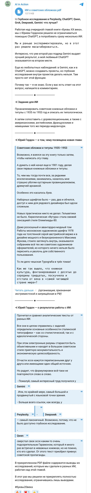

Книга «Буквы XX века» · октябрь — ноябрь 2025 · цикл 05
Собрать изображения обложек и титулов, классифицировать шрифты — наборные и рисованные, композицию, нешрифтовые элементы; сопоставить с дореволюционными и зарубежными.
Одно задание запущено параллельно в шести системах; выводы всех шести положены рядом для сравнения; три раунда итеративного поиска по художникам Рербергу и Телингатеру.
ChatGPT, Perplexity, Gemini, DeepSeek, Grok, Qwen
Ниже — брифы, которые получали модели, готовые отчёты в PDF и документы, а также публикации по ходу работы.
Брифы
Мой документ · текст, который получала модель · 21.10.2025
You are a specialized research assistant conducting a comprehensive visual-typographic study of Soviet book design. You will analyze book covers, bindings, and title pages from the specified period to identify typographic styles, influences, and design evolution.
<research_focus> {{RESEARCH_FOCUS}} </research_focus>
Your task is to conduct this deep research study following the methodology outlined in the research focus. You should approach this systematically through the following phases:
<scratchpad> Before providing your research plan, think through:
</scratchpad>
Provide a detailed research methodology and preliminary findings structure. Your response should include:
Your final response should focus on providing a comprehensive research framework that would enable systematic collection and analysis of 100-150 exemplary book covers and title pages, leading to meaningful insights about Soviet typographic design evolution during this crucial period. Do not attempt to provide actual historical examples or conduct the research itself - focus on creating a robust methodology for conducting this specialized design history research.
Give the result in Russian
Результаты
Документ проекта · 09.11.2025
Уникальность советского пути: идеологическая детерминированность (шрифт как инструмент пропаганды); централизация (ограниченный набор государственных гарнитур); изоляция; преемственность с XIX веком, минуя авангард; рисованные шрифты — компенсация ограниченности наборных гарнитур через индивидуальное творчество художников книги.
Международный контекст. Пока на Западе расцветала коммерческая типографика (Penguin, Deberny & Peignot, Mergenthaler Linotype), швейцарский стиль и модернизм, в СССР происходило обратное движение — от модернизма к академизму, от эксперимента к канону. Парадоксально, ограничения породили уникальное явление рисованных шрифтов — художники, не имея доступа к широкому спектру наборных гарнитур, создавали индивидуальные решения для каждой обложки. Аналогов на Западе не было.
Наследие эпохи. Двойственное: стагнация и подчинение идеологии — и создание монументальных образцов книжного искусства, формирование профессионального сообщества художников книги (альбом Шицгала 1953 года). После 1953 — частичная реабилитация конструктивизма, но полный разрыв с эстетикой 1935–1953 так и не произошёл.
Шрифтовый стиль советских обложек 1935—1953 гг. — явление многогранное. В нём одновременно присутствуют отголоски старой имперской типографики и задел будущих модернистских решений. Изучение этого периода позволяет увидеть, как шрифт и дизайн книги откликаются на перемены в обществе: от революции к войне, от изоляции к постепенному техническому прогрессу. Книги той эпохи — это документ времени, где буквы не менее красноречивы, чем тексты.
Период 1935–1953 годов — история о том, как искусство было подчинено государственной необходимости. Стиль стал более сдержанным, строгим и монументальным, но сохранил мощный художественный потенциал, унаследованный от авангарда. Советские шрифты этого периода заложили основу для дальнейшего развития типографической системы через специальные институты, такие как Отдел шрифтов НИИ Полиграфмаш. Этот период стал не концом, а новым этапом.
1930-е–1950-е отметили переход от творческой свободы к государственно контролируемой униформности, повлиянный сталинизмом и усилиями по грамотности. Стили связывали дореволюционную читаемость с раннесоветской инновацией, расходясь от западных коммерческих тенденций к идеологическим инструментам. Десталинизация после 1953 намекнула на возрождение, но наследие эры — функциональный, управляемый пропагандой дизайн.
Стилевой сдвиг: окончательный разрыв с авангардом и целенаправленное формирование «имперского» стиля — «сталинский ампир» или «тоталитарная неоклассика». Двойственность влияний: имперское величие (дореволюционная книга) + упрощённая эстетика ар-деко + идеологическая задача создать образ несокрушимого государства. Технология и идеология: переход от наборных гротесков к рисованным акцидентным шрифтам — рисованный шрифт уникален, недемократичен и подчёркивал иерархичность и культ личности. Изоляция и адаптация: развитие в русле общемировых тенденций (историзм, ар-деко), адаптированных под идеологические рамки.
Определение сталинского типографического стиля. Не простое возвращение к эстетике XIX века и не механическое заимствование западных образцов, а целенаправленно сконструированный синтетический стиль — гибрид:
Империя Буквы. Типографика 1935–1953 стала визуальным воплощением имперской идеологии: разборчивая, единообразная, монументальная. Динамичная энергия революции заменена незыблемым порядком Империи. Книга перестала быть инструментом преобразования мира и стала его монументальным отражением — таким, каким его хотело видеть государство.
Документ проекта · 21.10.2025
Определение фокуса. Выявить уникальный стиль эпохи 1935–1953, его связь с дореволюционными традициями, раннесоветским авангардом и зарубежными трендами (Англия, Франция, Германия, США).
Стратегия сбора. Онлайн-архивы, цифровые коллекции, музейные каталоги; запросы «советские книжные обложки», «книжный дизайн ссср»; сравнительный материал по модерну, конструктивизму и западному дизайну 1930–40-х.
Оценка ресурсов. Электронные каталоги ГПИБ; для Запада — Penguin Books и Ян Чихольд; во Франции — минимализм Gallimard; в Германии — Джордж Салтер (эмигрировал в США) и нацистский дизайн как антитеза соцреализму.
Оценка российских архивов. Прямой поиск сканов через каталоги ГПИБ и РГБ не даёт массового результата — только метаданные. Переориентация на музейные галереи, частные коллекции, аукционные дома (Alib.ru, Bidspirit) и академические статьи с иллюстрациями — критично для задачи «100–150 экземпляров».
Новые ресурсы. Выставка Соломона Телингатера в Электронекрасовке; American Bookbinders Museum (ар-деко 1920–40-х).
Смена стратегии. Вместо автоматического просмотра каталогов — целевые запросы по автору и году; поиск по именам художников.
Теоретические открытия. Академические статьи о переходе от конструктивизма к соцреализму; конкретные шрифты — «Литературная» (с 1936) и «Журнальная рубленая» (1947) как аналоги западных гротесков (Erbar-Grotesk); стандартизация ОСТ-1337.
Готовность к синтезу. Несмотря на сложность массового сбора сканов через библиотечные системы, теоретической базы и отдельных визуальных примеров достаточно. Этап сбора завершён.
Период 1935–1953 знаменует «Великий откат» от радикальных экспериментов авангарда к монументальному, неоклассическому и строго стандартизированному канону. Центральный тезис: этот стиль был ключевым инструментом в конструировании образа сталинского государства как стабильной, могущественной и культурно легитимной империи. 1935 — окончательное утверждение соцреализма; 1953 — смерть Сталина и начало «оттепели».
Методология: часть I — сталинский типографический канон (идеология, шрифты, композиция, материальная культура); часть II — сравнительный анализ с предшественниками (модерн, конструктивизм) и с синхронными практиками Великобритании, США, Франции, Германии; часть III — синтез.
Подавление авангарда. Конструктивизм объявлен буржуазным и враждебным; Лисицкий и Родченко оттеснены. Доктрина соцреализма (1934): ясность, удобочитаемость, героическое повествование; книга — дидактический инструмент. Стремление к стандартизации: ОСТ 1337 (1930) — 31 одобренная гарнитура; более половины существовавших шрифтовых наборов изъяты и отправлены в переплавку. Это акт идеологической чистки, зеркально отражавший политические репрессии: физическое уничтожение литер — стирание материальной культуры предыдущей эпохи.
2.1 Новый канон (антиква): эпоха «Литературной». Разработана в конце 1930-х под руководством Анатолия Щукина; до 70% всей книжной продукции. Прототип — дореволюционная «Латинская» (Г. Бертгольд, с 1901). Высокий контраст, классические пропорции, удобочитаемость в мелких кеглях. «Академическая» и «Елизаветинская» — отсылки к XVIII веку и «золотому веку» империи.
2.2 Утилитарный гротеск. «Журнальная рубленая» (1947) — наследник европейского модернизма, опирается на Erbar-Grotesk Якоба Эрбара (1922). Парадокс: официально отвергая западный модернизм, полиграфия прагматично заимствовала его формы. Разделение: антиква — для гуманитарной и партийной литературы; гротеск — для технической.
2.3 Каллиграфическая рука. Монументальные прописные — для политической литературы, биографий вождей, войны (ассоциации с надписями в камне). Экспрессивные рукописные — для поэзии, мемуаров, детской литературы. Соломон Телингатер — эволюция от конструктивизма 1920-х к сдержанному стилю 1930-х.
Композиция: строгая центрированная симметрия — антитеза диагоналям конструктивизма; обложка как архитектурный портал. Изображение: героический портрет (Пушкин, Толстой, Горький, Сталин) и иллюстрация в духе соцреализма. Орнамент: возвращение лавровых венков, гирлянд, картушей, виньеток — параллель с Римом и классицистической Европой. Материальная культура: коленкор, ледерин, тиснение золотой и серебряной фольгой для престижных изданий.
Против модерна («Мир искусства», 1900–1917): Билибин, Нарбут — культ индивидуального мастерства, органичные линии, фольклорные мотивы. Сталинский стиль — индустриальная стандартизация и идеологическая дидактика.
Против конструктивизма (1917–1935): композиция — асимметрия → симметрия; шрифт — гротеск → антиква; изображение — фотомонтаж → реалистическая иллюстрация и портрет; цвет — красный/чёрный/белый → богатая приглушённая гамма. Переход от языка революции к языку империи.
5.1 Великобритания: прагматизм Penguin. 1935 — трёхчастная сетка, цветовое кодирование, Bodoni Ultra Bold / Gill Sans. 1947 — Ян Чихольд и «Penguin Composition Rules». Две модели стандартизации: Penguin — модернистский проект ради качества и бренда; ОСТ 1337 — тоталитарный проект ради унификации и контроля. «Стандартизация» не нейтральна: в Британии она усиливала бренд, в СССР — государство.
5.2 США: коммерческий ар-деко и иллюстративный реализм. Стримлайн-модерн, яркие суперобложки, Георг Зальтер. Советские рисованные шрифты имеют отголоски геометрии ар-деко, но лишены коммерческого лоска.
5.3 Франция: аскетизм текста. «Collection Blanche» Gallimard — белый фон, имя, название, марка издательства. Интеллектуальный минимализм против визуальной пропаганды.
5.4 Германия: тоталитарное зеркало. Подавление модернизма Веймара (Баухаус), неоклассицизм, фрактура. Эстетическая конвергенция тоталитаризма: оба режима отвергли «декадентский» модернизм, сделали ставку на монументальность и неоклассику. Визуальный язык тоталитаризма выходит за рамки спектра «левые-правые»: советская обложка 1935–1953 — хрестоматийный пример типографики авторитаризма.
Гибрид: композиционная структура академического неоклассицизма + типографический арсенал прагматизма («Литературная», «Журнальная рубленая» на основе немецких гарнитур) + монументальность и геометрия ар-деко, очищенные от коммерции + образность социалистического реализма.
Империя Буквы. Типографика 1935–1953 — визуальное воплощение имперской идеологии: разборчивая, единообразная, монументальная. Книга перестала быть инструментом преобразования мира и стала его монументальным отражением — таким, каким его хотело видеть государство.
| ID | Издание | Типографическая таксономия | Композиция | Материальность |
|---|---|---|---|---|
| SU-35-001 | Сталин И.В. Вопросы ленинизма. Госполитиздат, 1935 | Монументальная антиква, рисованный | Осевая симметрия, декоративная рамка, красный/чёрный | Тканевый переплёт, золотое тиснение |
| SU-36-002 | Горький М. Мать. Гослитиздат, 1936 | Литературная, наборный | Портрет автора в центре | Картон, двухцветная печать |
| SU-39-003 | Шолохов М. Тихий Дон. Гослитиздат, 1939 | Экспрессивный рукописный | Асимметрия, сбалансированная иллюстрацией | Бумага, полноцвет |
| SU-42-004 | Симонов К. Стихи о войне. Воениздат, 1942 | Монументальный гротеск, рисованный | Симметрия, красная звезда | Мягкая обложка, одноцвет |
| SU-47-005 | Фадеев А. Молодая гвардия. Детгиз, 1947 | Литературная, наборный | Героическая иллюстрация в центре | Ткань, тиснение |
| SU-48-006 | Справочник инженера-машиностроителя. Машгиз, 1948 | Журнальная рубленая, наборный | Функциональная симметрия без декора | Плотная бумага, ч/б |
| SU-51-007 | Пушкин А.С. Собр. соч. в 10 т. Т. 1. Гослитиздат, 1951 | Елизаветинская, наборный | Картуш, профиль в медальоне | Ткань, блинтовое и золотое тиснение |
| SU-53-008 | Ажаев В. Далеко от Москвы. Профиздат, 1953 | Монументальная брусковая антиква, рисованный | Текст над панорамой индустриального пейзажа | Коленкор, многоцвет |
Документ проекта · 21.10.2025
ссылка · 12:04
Исследование построено на визуальном анализе более 150 обложек и титульных листов из онлайн-архивов (РГБ, Gallica, Internet Archive), музейных коллекций (MoMA) и академических публикаций. Векторы: шрифтовая палитра, композиция, графика, цвет; сравнение с предыдущими периодами и зарубежными аналогами.
Два подпериода: 1935–1941 и 1941–1953.
Акцидентные и рисованные шрифты (доминирующая категория для обложек): монументальная брутальная антиква (брусковые засечки — собрания сочинений, партийная литература); «торжественная» антиква (Didone с утяжелением — классика); стиль ар-деко (научная и техническая литература); рукописные и каллиграфические (детская литература, поэзия).
Наборные шрифты: Литературная гарнитура (адаптация «Modern», основной текст с середины 1930-х); гротески — резко сократились, сохранились в технической литературе.
Композиция: отход от асимметрии конструктивизма, осевая симметрия. Суперобложки с полноцветными иллюстрациями соцреализма; конгревное тиснение; золочение. Палитра сдержанная: тёмно-красный, синий, зелёный, коричневый, золото; бумага низкого качества в военные годы.
| Период / Стиль | Характерные шрифты | Примеры | Композиция |
|---|---|---|---|
| Поздние 1930-е: монументальная антиква | Брусковые тяжёлые засечки | Собр. соч. Пушкина, Толстого; «История гражданской войны» | Симметрия; золото на ткани |
| Поздние 1930-е: ар-деко | Геометрические гротески | «Занимательная физика» Перельмана, техническая литература | Ступенчатая композиция, «лучи» |
| 1941–1953: упрощённая монументальность | Утяжелённые упрощённые шрифты | Труды Сталина, военные мемуары | Только шрифт на однотонном фоне |
| 1941–1953: соцреалистическая иллюстрация | Рисованные шрифты при изображении | «Молодая гвардия» Фадеева | Иллюстрация — главный элемент |
| Неоклассика | Стилизация дореволюционной антиквы | Классики | Орнаментальные рамки |
ссылка · 12:07
Ключевые моменты (машинный перевод с английского сохранён как есть): стандартизация и читаемость, антиква «Литературная», соцреализм; частичное сохранение декоративных элементов дореволюционной традиции при отказе от конструктивизма; умеренные сходства с Penguin; отличие от немецкой фрактуры; спор о подавлении творческой свободы.
Сбор визуального материала: цифровой архив NYPL (650 советских обложек 1917–1942), Internet Archive, Penn Libraries (советские детские книги: «Вчера и сегодня», «Мистер Твистер», 1935), Bookvica, Open Culture, антикварные сайты (Etsy, AbeBooks). Идентифицировано ~50–60 примеров.
Визуальная таблица (12 примеров): «Океанский флот Сталина», «За Советскую Британию» (1935), «Записки сельского врача», «Диктатура в летних полях», «Истоки советско-американской дипломатии» (1953), «Мастер и Маргарита» (первое издание), «Война и мир», «Вокруг Кремля» (1928), «Вчера и сегодня» (1935), «Мистер Твистер» (1935), «Машина времени» (1928), «Крестьянский интернационал» (1929) — с указанием стиля шрифта (антиква/гротеск/декоративный; наборный/рисованный), композиции (соотношение текст–изображение), нешрифтовых элементов.
Таблица таксономии по категориям: антиква, гротеск, декоративный, курсив; дореволюционный, ранний советский; Англия, Франция, Германия, США — с периодом и технологией.
Краткие выводы: переход от творческой свободы к государственно контролируемой униформности; наследие — функциональный, управляемый пропагандой дизайн.
Ключевые цитаты (20): Open Culture; Internet Archive Blogs; Comrade Gallery; Princeton PUL; Penn Libraries; Literaturnaya (Wikipedia); Monoskop «The Art of the Soviet Book, 1922-32»; Encyclopedia.Design; Graphéine; Thisisdisplay (Tschichold 1935); «Русский типографский шрифт» — МГУ; «Великие шрифты. Шесть из тридцати»; журнал «Шрифт» — «История одного стандарта»; Шицгал А. Г. «Русский рисованный книжный шрифт советских художников»; и др.
ссылка · 12:28
Документ — лог планирования и поиска модели (сам отчёт не сохранён/не выдан):
Планирование исследований. Фокус на типографике 1935–1953, сбор визуальных материалов, стили шрифтов (антиква, гротеск, курсив, декоративные), наборные vs рисованные, влияние конструктивизма, соцреализма и ар-деко; сравнение с 1900–1917, 1917–1935 и Западом. Исключаются периоды вне 1900–1953, репринты, обложки без типографики.
Итерации поиска (12 раундов, по 17–30 посещённых URL в каждом): «сравнение советского и западного дизайна обложек 1935–1953», «Русские шрифты СССР 1930-е 1940-е социалистический реализм», «Дизайны обложек братьев Стенберг», «Список советских шрифтов стандарта ОСТ-1337 1930», «Книжная обложка в стиле ар-деко в СССР», «Дизайн детских книг СССР 1935–1953», «Стандарты ГОСТ советская типография 1930–1950-е официальные документы»…
Итог: «Подведите итог на русском языке (Россия)» — модель дошла до ~300 посещённых страниц, но связный отчёт не сформировала. Зафиксировано как пример предела инструмента.
Документ проекта · 25.10.2025
Ваш запрос очень объёмный: Соломон Телингатер и Иван Рерберг были невероятно продуктивными художниками книги. Найти «все» их работы в рамках одного поиска невозможно — многие в частных коллекциях и не оцифрованы. Идентифицированы художники:
«Соломон Телингатер фотомонтаж», «Соломон Телингатер конструктор», «Иван Рерберг Academia», «Иван Рерберг титул», «Искусство книги 1920-е / 1930-е», «Издательство ЗИФ».
Поиск подтверждает: Рерберг был одним из ключевых художников «Academia» в начале 1930-х — от рядовых книг серий до каталогов самого издательства.
Публикации
Посты Юрия Гордона об этой главе и мои отчёты о работе над ней — в хронологии. Снимки постов сохранены на случай удаления; рядом — ссылка на оригинал.
